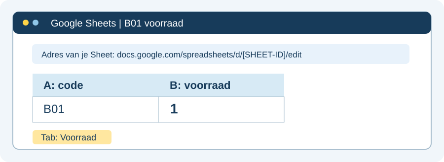
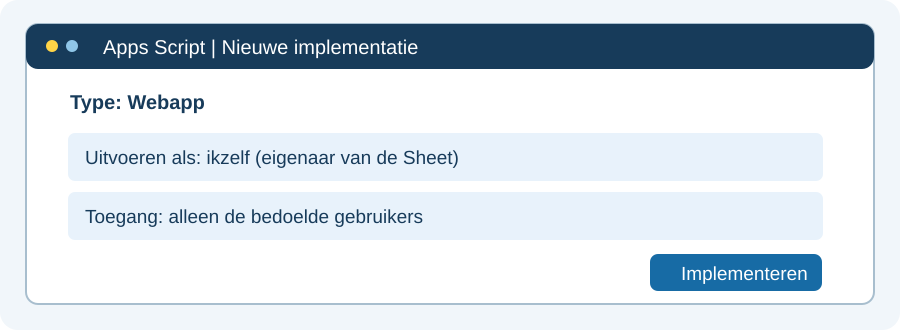
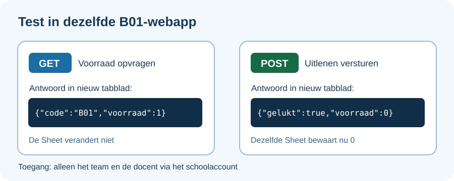
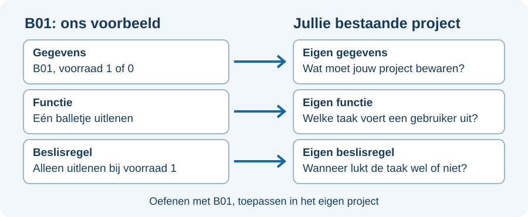
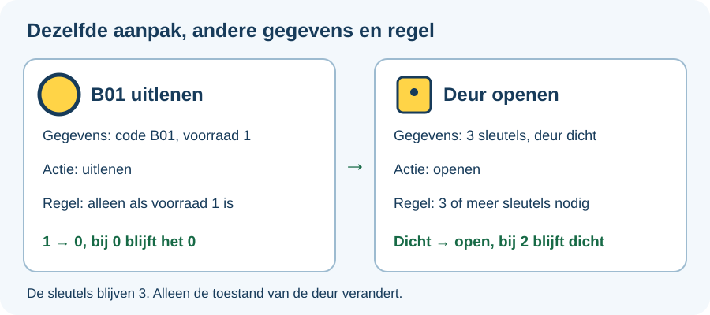

Werkboek B01 | van lokale demo naar gedeelde voorraad
Doel: één team gebruikt één Google Sheet en één Apps Script-project. De Manager richt beide in met het schoolaccount. De rest opent later dezelfde webapp. Het balletje B01 heeft voorraad 1 als het beschikbaar is en 0 als het is uitgeleend.
De beelden hieronder zijn schematische schermen. Knoppen kunnen op jouw Chromebook iets anders heten. De broncode staat in Code.gs en Index.html. Er is nog geen Sheet of live webapp bij deze repository gemaakt.
Oefening 1 | Maak de gezamenlijke voorraad

Doen
- De Manager opent Google Drive en maakt één nieuwe Google Sheet voor het team.
- Noem het eerste tabblad precies
Voorraad. - Vul A1
code, B1voorraad, A2B01en B2 het getal1in. - Kopieer uit het adres alleen de Sheet-ID: het stuk tussen
/d/en/edit. Deel die ID niet in openbare Issues.
Controleren: zie je het tabblad Voorraad en staat B01 naast het getal 1? Er hoort precies één rij met B01 te zijn.
Oefening 2 | Zet de code in Apps Script

Doen
- De Backend-leerling opent Apps Script in de browser en kiest Nieuw project. Gebruik voor dit team maar één project.
- Open Code.gs op Github. Kopieer de hele inhoud naar het bestaande bestand
Code.gsin Apps Script. - Vervang in dat Apps Script-bestand alleen
VUL_HIER_DE_SPREADSHEET_ID_INdoor jouw Sheet-ID. Laat de aanhalingstekens staan. Zet de ID niet terug in Github. - Klik in Apps Script op + bij Bestanden, kies HTML en noem het bestand
Index. Kopieer daar de hele inhoud van Index.html in. Sla op.
Controleren: staan er precies Code.gs en Index.html in het Apps Script-project? Staat de ID alleen in de Apps Script-kopie van Code.gs?
Oefening 3 | Geef het team toegang

Doen
- De Manager die de Sheet maakte kiest in Apps Script Implementeren → Nieuwe implementatie → Webapp.
- Kies Uitvoeren als: ikzelf. Geef toegang alleen aan de bedoelde gebruikers. Welke beperkte opties je ziet, hangt af van je schoolaccount. Vraag de docent als het team geen geschikte optie heeft. Kies geen openbare toegang voor deze oefening.
- Bevestig de toestemming van Google voor het lezen en wijzigen van je Sheet. Kopieer de webapp-URL met
/execen deel die met je team en docent via een plek waar zij toegang toe hebben.
Controleren: opent de /exec-URL de B01-pagina en staat daar Beschikbare voorraad: 1? Zie je een fout, controleer dan de Sheet-ID en de exacte namen uit oefening 1 en 2.
Oefening 4 | Controleer de gedeelde toestand

Doen
- Open dezelfde
/exec-URL in twee vensters, bijvoorbeeld op twee Chromebooks van het team. - Klik in venster 1 op Uitlenen. Vernieuw venster 2.
- Klik in venster 2 ook op Uitlenen. Klik daarna op Terugbrengen en vernieuw venster 1.
Controleren: na de eerste uitlening staat in beide vensters na vernieuwen 0. De tweede uitlening geeft Niet beschikbaar en laat de voorraad op 0. Na terugbrengen staat er 1. Het JSON-vak op de pagina laat dezelfde voorraad zien. De server controleert aanvragen één voor één, zodat twee gelijktijdige verzoeken niet allebei B01 kunnen krijgen. Verander cel B2 tijdens het gebruik niet zelf.
Oefening 4a | Test GET en POST zonder de gewone knoppen

Doen
- Gebruik de bestaande webapp uit oefening 3. Log op je Chromebook in met je schoolaccount. De eigenaar zet de nieuwste versie van
Code.gsenIndex.htmlin hetzelfde Apps Script-project en implementeert een nieuwe versie. Er is geen tweede Sheet of installatie nodig. - Open de beperkte
/exec-URL. Klap Test GET en POST zonder de gewone knoppen open. Staat de voorraad op 0? Gebruik eerst Terugbrengen om op 1 te beginnen. - Klik op GET: open het JSON-antwoord. In een nieuw tabblad staat bijvoorbeeld
{"code":"B01","voorraad":1}. GET leest alleen. - Kies uitlenen in het testformulier en klik op Verstuur POST. Het formulier stuurt echt een HTTP POST naar dezelfde
/exec-URL. In een nieuw tabblad staat{"gelukt":true,"voorraad":0}. - Verstuur uitlenen nog een keer. Nu staat er
{"gelukt":false,"voorraad":0,"melding":"Niet beschikbaar"}. Ververs het GET-tabblad: de voorraad blijft 0. Kies ten slotte terugbrengen in het formulier om weer op 1 te eindigen.
Controleren: heb je GET en beide POST-antwoorden als JSON gezien? Stond de Sheet na de eerste POST op 0 en na terugbrengen weer op 1? De knop Verstuur POST hoort bij dit testformulier, niet bij de gewone uitleenknop van de app. Je gebruikt alleen de browser en jullie bestaande, beperkte webapp. Krijg je een aanmeldscherm, meld je aan met het schoolaccount dat toegang heeft; vraag de eigenaar of docent om toegang als dat niet lukt.
Oefening 5 | Jullie eigen project

Doen
- Kijk naar B01: de gegevens zijn code B01 en voorraad 1 of 0, de functie is uitlenen, de beslisregel is ‘alleen bij voorraad 1’.
- Wijs in jullie bestaande project aan welke gegevens jullie nodig hebben, welke ene taak de gebruiker uitvoert en welke regel bepaalt of die taak lukt. Bij een game kan dat bijvoorbeeld ‘sleutels’, ‘deur openen’ en ‘alle sleutels verzameld’ zijn.
- Gebruik die drie antwoorden bij het ontwerpschema van jullie eigen eindopdracht. Backend kijkt welke gegevens moeten blijven kloppen, Product laat zien wat de gebruiker ziet en doet.
Controleren: kunnen jullie de gewone en lastige situatie van jullie eigen functie uitleggen? Bij welke handeling veranderen de gegevens, en wanneer juist niet?
B01 is oefenmateriaal. Voor deze vertaalslag maak je geen tweede installatie en lever je niets extra in.
Oefening 6 | Een deur met drie sleutels

Doen
Stel dat jullie bestaande project een game is. Speler
P01heeft 3 sleutels en een gesloten deur. De taak is open de deur. Met 2 sleutels blijft de deur dicht. Sleutels worden hier niet verbruikt. Dit is een klein vergelijkingsvoorbeeld voor jullie eigen ontwerp, geen tweede verplichte installatie.Vergelijk de gegevens. B01 gebruikt tabblad
Voorraadmetcode | voorraaden rijB01 | 1. De game zou in een eigen project tabbladSpelergebruiken:speler sleutels deurOpen P01 3 FALSE FALSEin C2 betekent dicht,TRUEbetekent open. De Sheet-ID hoort alleen in de privé Apps Script-kopie van jullie eigen project. Gebruik voor de B01-oefening gewoon de bestaande Sheet.Vergelijk de regels in
Code.gs. Bij B01 wordt B2 na uitlenen0en bij voorraad0wordt de actie geweigerd. In een game zou de deurfunctie C2 pas optruezetten als er minstens 3 sleutels zijn. Een mogelijke functie voor het eigen project is:function openDeur() { return metSlot_(function () { const sheet = SpreadsheetApp.openById(SPREADSHEET_ID).getSheetByName('Speler'); const sleutels = sheet.getRange('B2').getValue(); const deurOpen = sheet.getRange('C2').getValue(); if (!Number.isInteger(sleutels) || sleutels < 0 || typeof deurOpen !== 'boolean') { throw new Error('Controleer B2 en C2 in tabblad Speler'); } if (deurOpen) { return { gelukt: false, sleutels, deurOpen, melding: 'De deur is al open' }; } if (sleutels < 3) { return { gelukt: false, sleutels, deurOpen, melding: 'Nog niet genoeg sleutels' }; } sheet.getRange('C2').setValue(true); SpreadsheetApp.flush(); return { gelukt: true, sleutels, deurOpen: true }; }); }metSlot_is dezelfde functie als in B01: zij voorkomt dat gelijktijdige aanvragen allebei met een oude toestand werken. Ook de rest van de backend moet bij de eigen gegevens passen. Deze functies vervangen de B01-varianten in jullie eigen backend. Het zijn voorbeeldfragmenten, geen tweede volledige app:const TABBLAD = 'Speler'; // in plaats van 'Voorraad' function leesSpeler() { const sheet = SpreadsheetApp.openById(SPREADSHEET_ID).getSheetByName(TABBLAD); return { speler: 'P01', sleutels: sheet.getRange('B2').getValue(), deurOpen: sheet.getRange('C2').getValue() }; } function doGet(e) { if (e.parameter.api === 'speler') return json_(leesSpeler()); return HtmlService.createHtmlOutputFromFile('Index'); } function doPost(e) { const verzoek = JSON.parse(e.postData.contents); if (verzoek.speler !== 'P01' || verzoek.actie !== 'openen') { return json_({ gelukt: false, melding: 'Onbekend verzoek' }); } return json_(openDeur()); }Vervang ook de controle op
A1=code, B1=voorraad, A2=B01doorA1=speler, B1=sleutels, C1=deurOpen, A2=P01. InIndex.htmlhoren dan een knop Open deur en een melding voor te weinig sleutels. Die knop kangoogle.script.run.openDeur()aanroepen. Kopieer deze gamefragmenten niet in jullie B01-installatie.Schrijf voor jullie ontwerp de verwachte antwoorden op. GET bij de beginstand:
{"speler":"P01","sleutels":3,"deurOpen":false}. POSTopenenmet 3 sleutels:{"gelukt":true,"sleutels":3,"deurOpen":true}. Lastig: begin opnieuw met 2 sleutels enFALSE. POSTopenengeeft{"gelukt":false,"sleutels":2,"deurOpen":false,"melding":"Nog niet genoeg sleutels"}. Schrijf bij je eigen project op welke gegevens, cel, beslisregel en JSON-velden daar in plaats van B01 nodig zijn.
Controleren: kun je aanwijzen dat B01 B2: 1 → 0 verandert, maar de game C2: FALSE → TRUE? Bij twee sleutels blijft C2 FALSE. De drie sleutels blijven ook na openen in B2 staan. Bij jullie bestaande project kies je je eigen taak en regel; dit voorbeeld levert geen extra inleverwerk op.
Wat doen GET, POST en JSON?
Open <jouw /exec-URL>?api=voorraad in een browservenster. Dat is een GET: vraag de voorraad op. Je krijgt bijvoorbeeld {"code":"B01","voorraad":1}. Dat antwoord is JSON, tekst die een programma kan lezen.
POST is een verzoek om iets te wijzigen, zoals {"code":"B01","actie":"uitlenen"} of {"code":"B01","actie":"terugbrengen"}. De gewone knoppen op de pagina gebruiken google.script.run en sturen zelf geen HTTP POST. Het testformulier uit oefening 4a doet dat wel: het verstuurt de velden code en actie als formuliergegevens. doPost accepteert daarnaast een JSON-verzoek van een apart programma. In beide gevallen antwoordt de server met JSON. Je hoeft op je Chromebook geen extra tool te installeren.
Nog niet live vanuit deze repository: de code hier heeft geen echte Sheet-ID, Apps Script-project of webapp-URL. Zodra jullie zelf een werkende versie hebben ingericht, blijft de toegang beperkt tot de gebruikers die het team heeft gekozen. Na een latere codewijziging moet de eigenaar een nieuwe versie van de webapp implementeren. Gebruik geen echte persoonsgegevens in de Sheet.